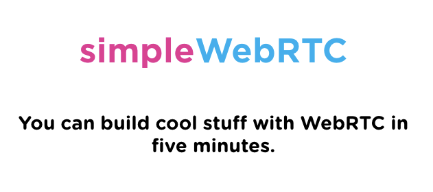

Twilio & WebRTC
Turning Your Browser
into a Phone
Carter Rabasa, Developer Evangelist
I'm Carter
@CarterRabasa
github.com/crabasa
carter@twilio.com
Twilio is Changing Communications Forever
By migrating the communications industry from legacy in hardware to its future in software.
Built on Web Standards


Let's Write Some Code
WebRTC
Enables realtime communication in the browser via open peer-to-peer protocols.
WebRTC is not simple
ICE
STUN
TURN
NAT
SDP

Is WebRTC Ready Yet?

credit: iswebrtcreadyyet.com


WebRTC + Web Audio API
Thank You
Carter Rabasa
Developer Evangelist
Code
github.com/crabasa/twilio-webrtc-node
Sign-up
twilio.com
Get $50
Use the Promo Code SEATTLEJS